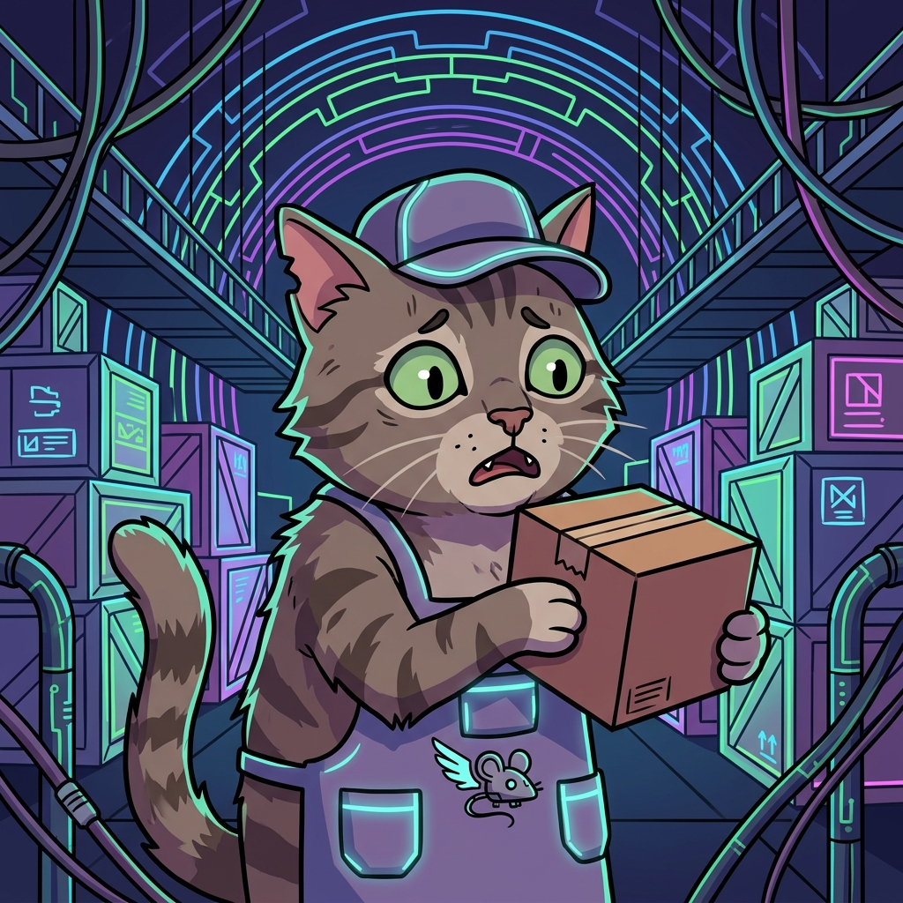

〜ダンボール箱と添字の魔法〜

自分をエリート宅配業者だと思い込んでいるトラ猫。
「配列」という名のダンボール箱に荷物を詰め込んだり探したりする業務を任されたが…
添字を間違えるとバグモンスターが現れて大パニックに！？
配列の先頭から順番に「これかな？」と1つずつ探していくもっともシンプルな方法。データがバラバラでも探せるが、数が多いと時間がかかるニャ。
データが「順番に並んでいる（ソート済み）」ときに使える高速な探し方。真ん中を見て「右か左か」を判断し、探す範囲を半分ずつに絞っていくニャ！
隣り合う箱を見比べて、順番が逆なら「交換」するのを繰り返す方法。重い泡（大きな数字）が右側にブクブクと沈んでいくように見えることから名前がついたニャ！